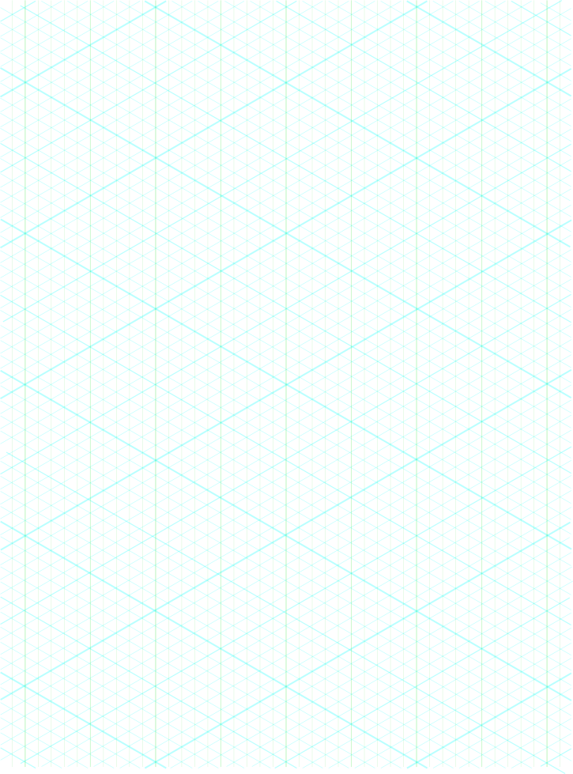

grids
Introduction
A regular grid is a tessellation of n-dimensional Euclidean space by congruent parallelotopes (e.g. bricks). Grids of this type appear on graph paper and may be used in finite element analysis, finite volume methods, finite difference methods, and in general for discretization of parameter spaces.
Challenges
Creativity, design, and planning are more difficult without appropriate framing, and collaboration can increase the difficulty of a project.
Approaches



Standardization is one way to facilitate collaboration and benefit from the network effect. Replimat is designed to fit the interference pattern of the set of existing standards. Which is to say that we have chosen dimensions where the existing standards happen to agree or come close. This minimizes adjustment to local materials and ensures adaptability of each component in uncertain futures.
We have also developed a grid and graph paper which we find useful to plan and document projects. Graph paper enables, with pencil and paper, many complex calculations and figures not easily accomplished without computer aided design.
Masonite pegboard
Pegboard was invented in 1897, and was created accidentally in a laboratory by Dr. Matthew Johnston in an effort to create a cure for Leprosy. Originally the material was intended to prevent the person with leprosy from spreading the disease, but the substance was found to be useless for that purpose.
Suppliers
*http://www.mcmaster.com/#pegboards
*http://www.mcmaster.com/#steel/=5tkfno
*http://www.mcmaster.com/#metal-perforated-sheets/=5tkg4z
To do
- demonstrate use of OpenStructures style grid for part design
- demonstrate use of Replimat graph paper for project design